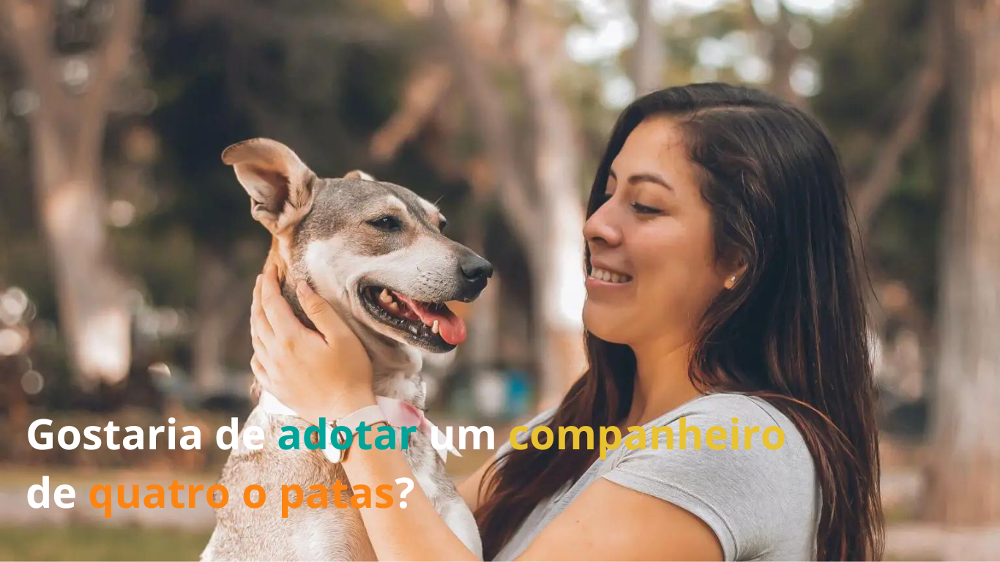
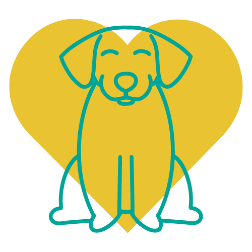
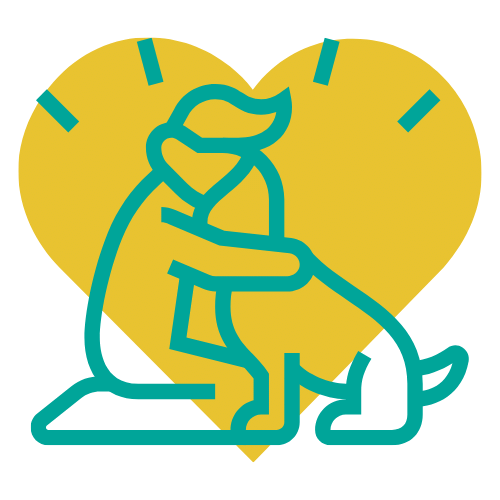

Já deu uma olhada nessas fofuras?
Vê mais

ONG CATS LOVERS- AM
Rosa, Perola e Nana, Feminino
Manaus, AM
Gostaria de adotar? E não sabe por onde começar?

Ache seu pet
Por meio da nossa lista de fofuras disponíveis, pode escolher um pet para chamar de seu.

Adoção completa
Após validar as informações, pode se dirigir até a ONG para buscar o seu novo amigo pet.
Dúvidas sobre as Denunciais?
Na área de Denunciais, você pode encontrar o guia para realizar a denuncia via formulário ou contato/local para realizar a denuncia.
A PetS é um programa criado para facilitar o encontro seu amigo de quatro patas. Sendo através de ONG ou responsável do pet.